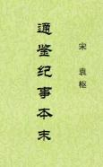

| 史籍 > |
| 通鉴纪事本末 |
| [南宋]袁枢 编 |
|
通鉴纪事本末，通行本，42卷，南宋袁枢据《资治通鉴》重编。取《资治通鉴》所记之事，区别门目，分类编排。专以记事为主，每一事详书始末，并自为标题，共记239事，另附录66事。开“纪事本末体”之先河。 “始于三家之分晋，终于周世宗之征淮南，包括数千年事迹，经纬明晰，节目详具，前后始末，一览了然。遂使纪传编年贯通为一，实前古之所未见也。”——见《提要与目录》。 （2021/9/29，独孤氏整理，初校。此文本原应为繁体转换而来。） |
 |